Visual review: camera-01645 labels a building/container facade as train; camera-02056 labels a guardrail as bench. No independent new-class GT; do not approve avoidance from coarse groups.
YOLO11m: baseline four / all 80 Both inputs use the same semantic hood mask. Left: baseline. Right: all COCO. Infrastructure detection is not avoidance approval. New class cases require independent review.
{"image": "camera-00950.jpg", "bag": "camera", "index": 950, "stamp_ns": "1789980362157132387", "labels": ["traffic light"], "review": "pending_independent_review_no_new_class_GT"} 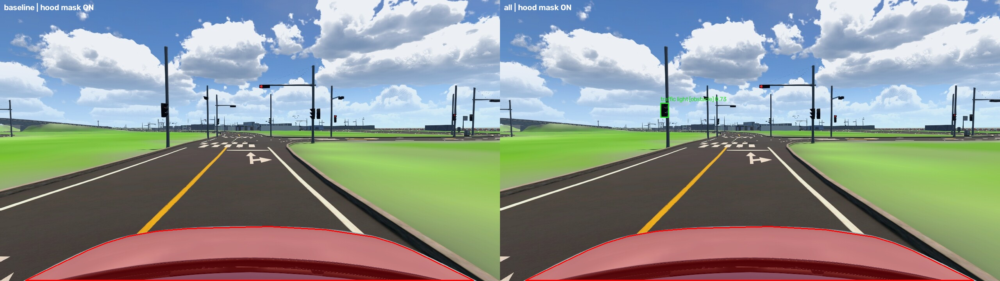
{"image": "camera-01030.jpg", "bag": "camera", "index": 1030, "stamp_ns": "1789980366168473482", "labels": ["traffic light"], "review": "pending_independent_review_no_new_class_GT"} 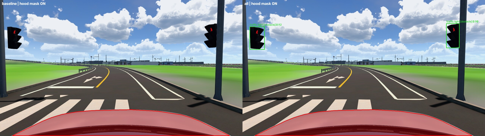
{"image": "camera-01179.jpg", "bag": "camera", "index": 1179, "stamp_ns": "1789980373600545644", "labels": ["traffic light"], "review": "pending_independent_review_no_new_class_GT"} 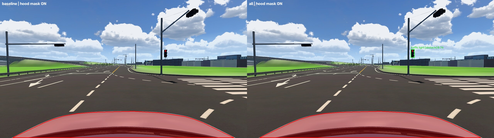
{"image": "camera-01626.jpg", "bag": "camera", "index": 1626, "stamp_ns": "1789980395940465688", "labels": ["traffic light"], "review": "pending_independent_review_no_new_class_GT"} 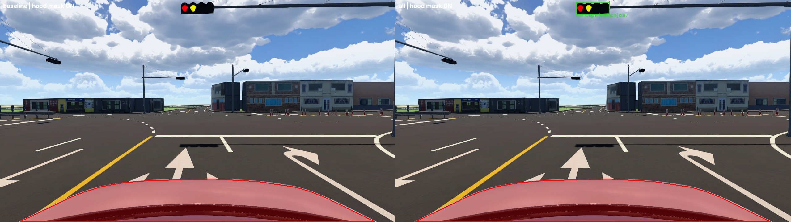
{"image": "camera-01645.jpg", "bag": "camera", "index": 1645, "stamp_ns": "1789980396901382207", "labels": ["train"], "review": "pending_independent_review_no_new_class_GT"} 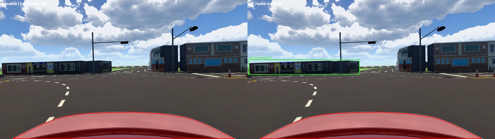
{"image": "camera-01661.jpg", "bag": "camera", "index": 1661, "stamp_ns": "1789980397690366029", "labels": ["bench"], "review": "pending_independent_review_no_new_class_GT"} 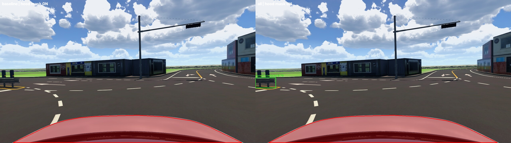
{"image": "camera-01681.jpg", "bag": "camera", "index": 1681, "stamp_ns": "1789980398705360412", "labels": ["train"], "review": "pending_independent_review_no_new_class_GT"} 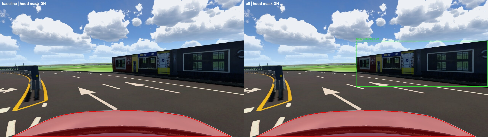
{"image": "camera-01682.jpg", "bag": "camera", "index": 1682, "stamp_ns": "1789980398749275684", "labels": ["train"], "review": "pending_independent_review_no_new_class_GT"} 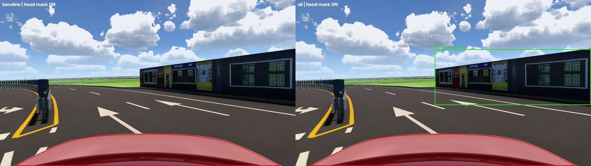
{"image": "camera-02056.jpg", "bag": "camera", "index": 2056, "stamp_ns": "1789980417473248243", "labels": ["bench"], "review": "pending_independent_review_no_new_class_GT"} 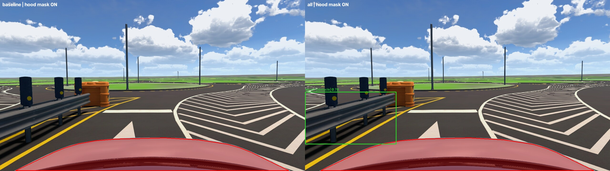
{"image": "camera-02057.jpg", "bag": "camera", "index": 2057, "stamp_ns": "1789980417500174522", "labels": ["bench"], "review": "pending_independent_review_no_new_class_GT"} 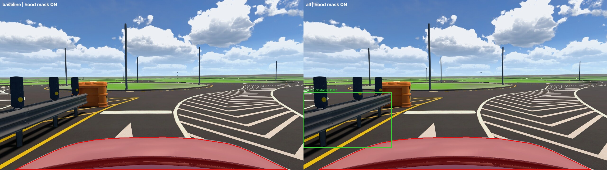
{"image": "camera-02741.jpg", "bag": "camera", "index": 2741, "stamp_ns": "1789980451704238653", "labels": ["train"], "review": "pending_independent_review_no_new_class_GT"} 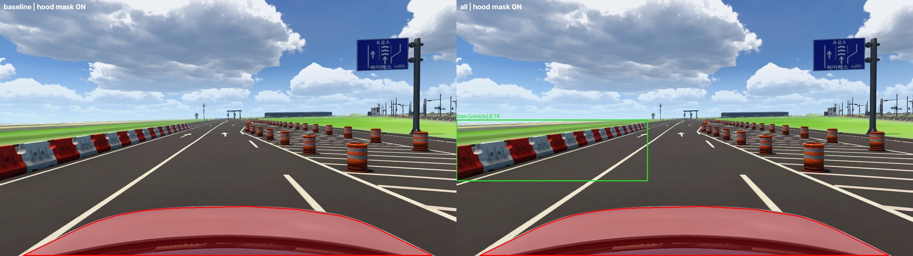